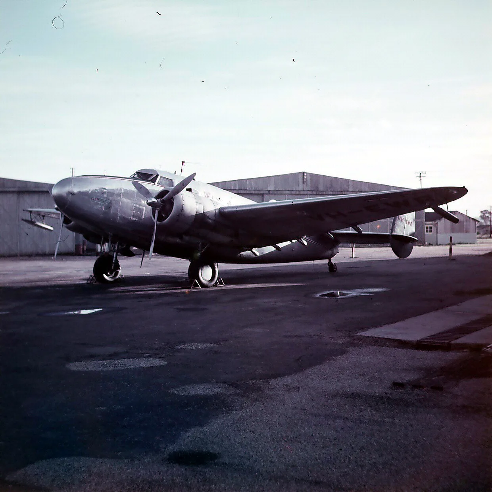
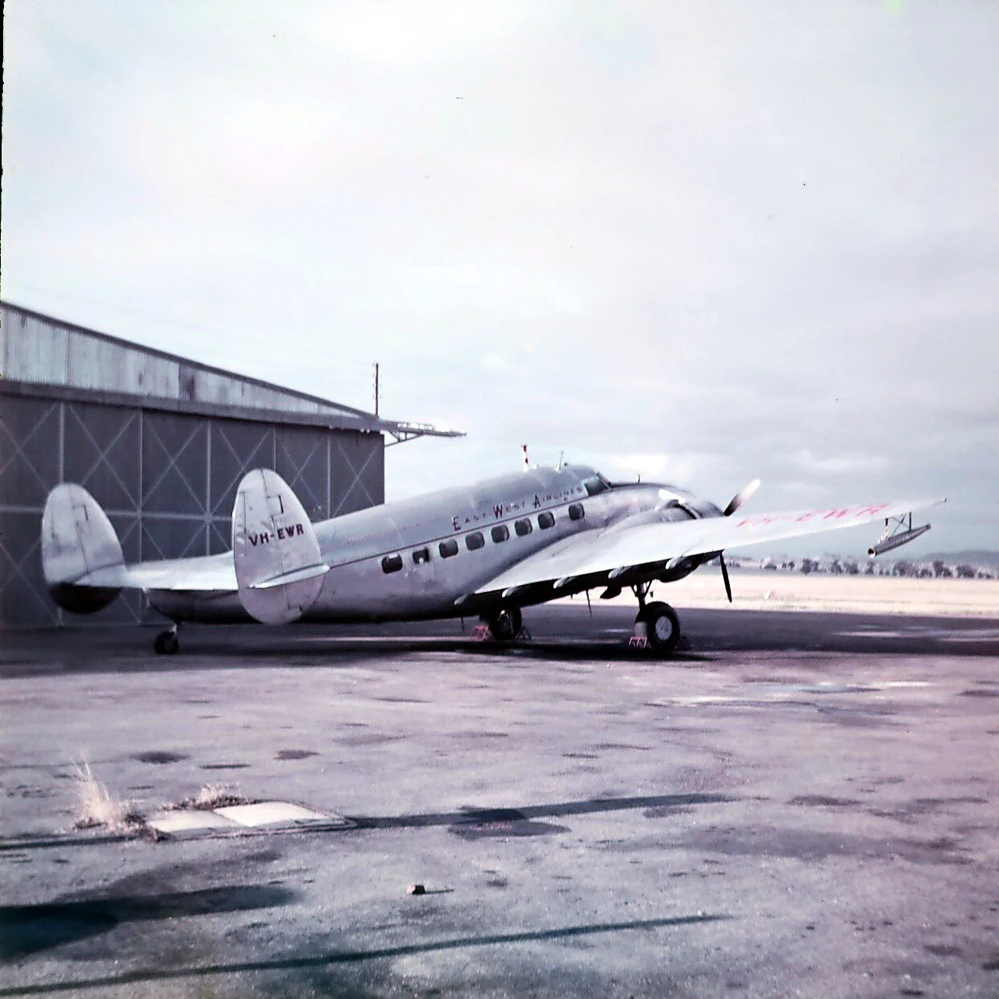
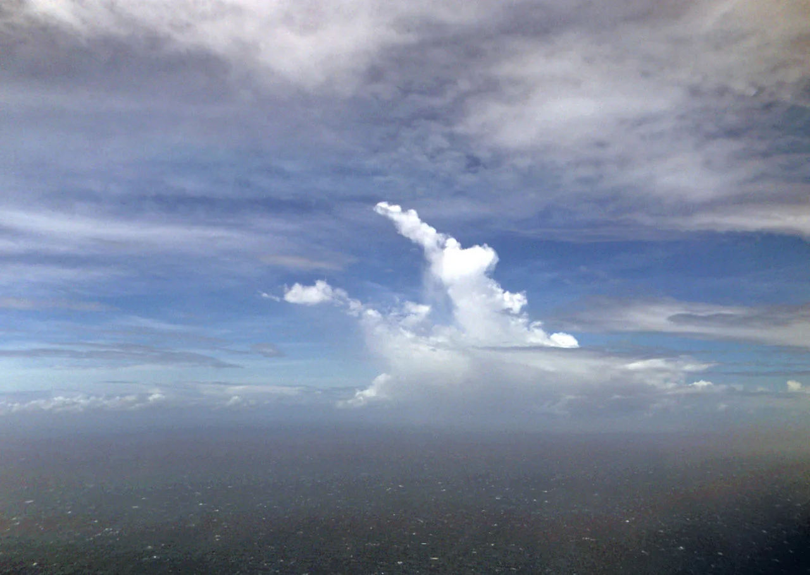

The idea is simple; the atmosphere is not
Cloud seeding generally means introducing particles into suitable clouds to encourage ice formation or precipitation processes. The simple version sounds like a switch: add material, get rain. The real version is conditional. The cloud has to be the right kind of cloud, in the right state, with the right surrounding weather.
That conditional nature is why cloud seeding is so durable and so debated. It offers enough evidence and practical use to remain interesting, but not enough certainty to satisfy every public expectation. Weather is a messy system. Small interventions are hard to measure against what might have happened naturally.
Why governments keep returning to it
Drought, snowpack, agriculture, reservoirs, and water politics create pressure for action. Cloud seeding is attractive because it appears targeted and relatively inexpensive compared with building enormous new water infrastructure. In some regions it is treated as one tool among many rather than a miracle solution.
The public conversation often goes wrong when weather modification is described as total weather control. That framing creates unrealistic hope and equally unrealistic fear. A better frame is narrower: under certain conditions, can a program modestly influence precipitation outcomes, and how should that be measured and governed?


The useful lesson
Cloud seeding is strange because it lives at the edge of human control. It reveals how people respond when a natural system is vital, uncertain, and emotionally charged. The weirdest part is not that people try to influence clouds. The weirdest part is how badly we want weather to become a manageable interface.
Why measurement is difficult
A seeded cloud cannot be rerun under identical conditions without seeding. That missing counterfactual is the central evaluation problem. Researchers use comparisons, randomized experiments when possible, radar, gauges, models, and long observation periods, but natural variation remains large. A storm that produced more precipitation after treatment does not by itself prove what caused the increase.
Good programs therefore define suitable clouds, operating criteria, suspension rules, and measurement methods before flying. The question is not simply whether rain followed an aircraft. It is whether a body of observations shows a repeatable effect larger than the background noise.
Project STORMFURY and the value of a failed idea
From the 1960s into the early 1980s, Project STORMFURY investigated whether seeding could weaken hurricanes. The proposed mechanism depended on assumptions about supercooled water and eyewall structure. Later observations showed that natural hurricanes could reorganize in ways that resembled the expected result, while suitable seeding conditions were less common than hoped.
That history is valuable because a research program can improve knowledge even when its operational promise does not survive. Flights, instruments, and analysis contributed to hurricane observation. The project also shows why weather modification claims should remain narrower than weather-control language.

Questions a public program should answer
Who authorizes operations? What conditions qualify? How is effectiveness measured? What happens when flood risk rises? How are neighboring regions informed? These governance questions are part of the technology. A modest intervention in a shared atmosphere still creates public questions about evidence, responsibility, and trust.